CtrlWAM
Controllable World Action Models with
Aligned Intent and Foresight
Overview
Intent and foresight
physically aligned
One world action model
World action models jointly predict an agent's future actions (intent) and their visual consequences (foresight). CtrlWAM pairs each perturbed action with its simulator-rendered consequence during training, where both modalities remain physically consistent, and extends the action interface beyond ego-only control to predict or follow commands for the other agents.
Read the abstract
World action models (WAMs) jointly predict actions (intent) and visual future (foresight). Standard training adds noise to recorded actions and video simultaneously, but such training paradigms introduce a mismatch: perturbed actions imply a counterfactual visual future, while the noised video remains tied to the recording. In the low-noise regime, the scene geometry and even the dynamic behavior remain clearly visible from the noisy future frames despite the added noise.
We present CtrlWAM, which executes perturbed actions in a simulator and pairs them with their noised visual consequences for joint WAM learning. To accommodate the different denoising requirements of video and actions, we introduce warped video–action noise schedules that aim to keep visual layout responsive as action predictions evolve. We further extend the action interface from ego-only control to a variable number of agent streams, allowing a unified model to represent predicted or commanded futures for multiple agents.
Driving experiments show more accurate action forecasts, closer agreement between generated video and actions, and better following of supplied commands; robotics experiments show stronger motion fidelity and controllability. Matched controls support the benefit of off-path renders for command following and manipulation fidelity. Together, these findings contribute to a more controllable world action model.
Actions + video, together
Both future streams are denoised jointly; We evaluate whether the imagined video actually reflect the predicted intent.
Action-conditioned video
Future actions are supplied clean as commands; only video is generated. Controllability is measured by whether the video follows a modified command.
Video-conditioned actions
Clean future video, noised actions. A separately trained inverse dynamics model (IDM) also reads trajectories out of generated video for evaluation.
Motivation
Standard noising pairs a perturbed action with video of the recorded future
Perturbing the action implies a different future, but Gaussian noise added to the recorded frames leaves the depicted motion unchanged. The three states replay below.
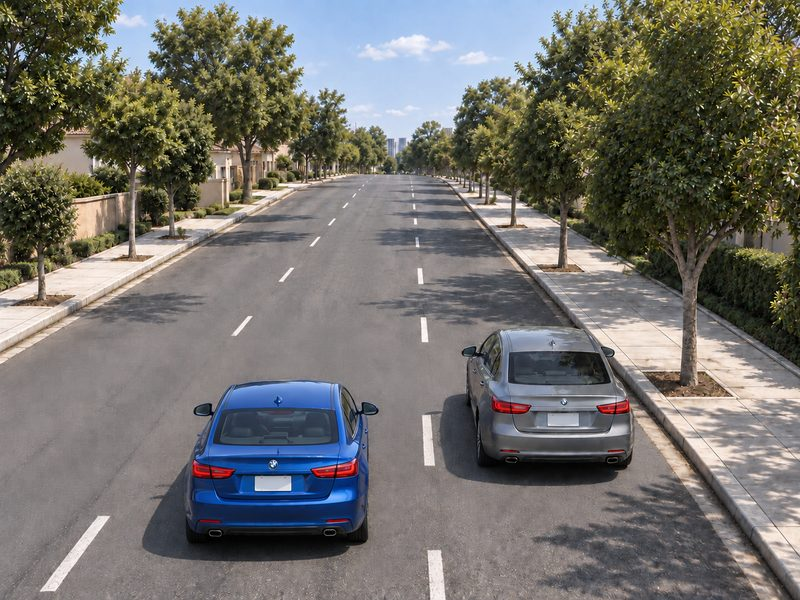
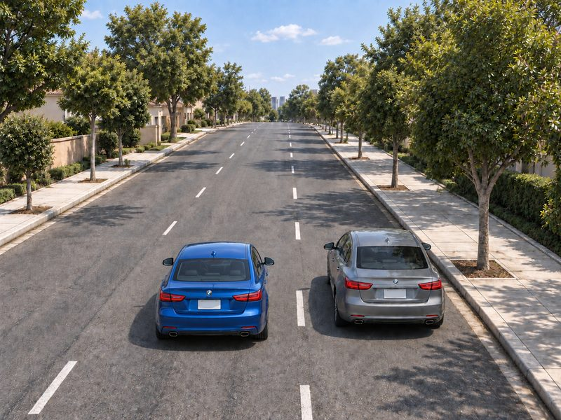
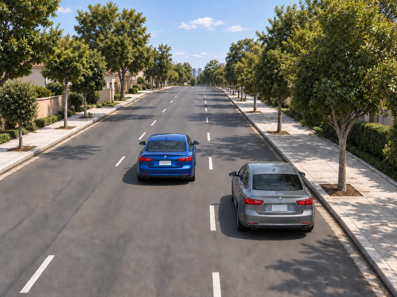
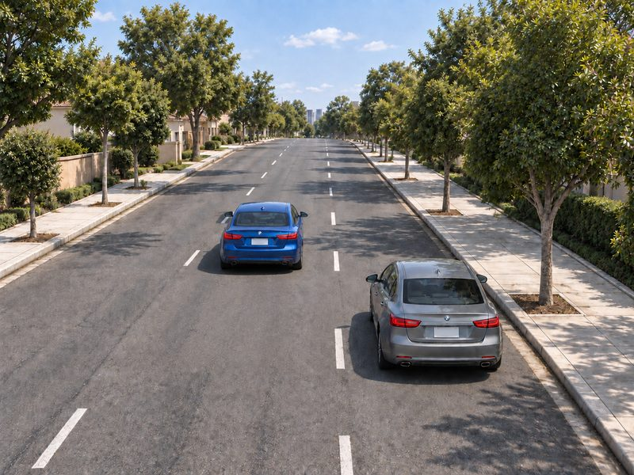
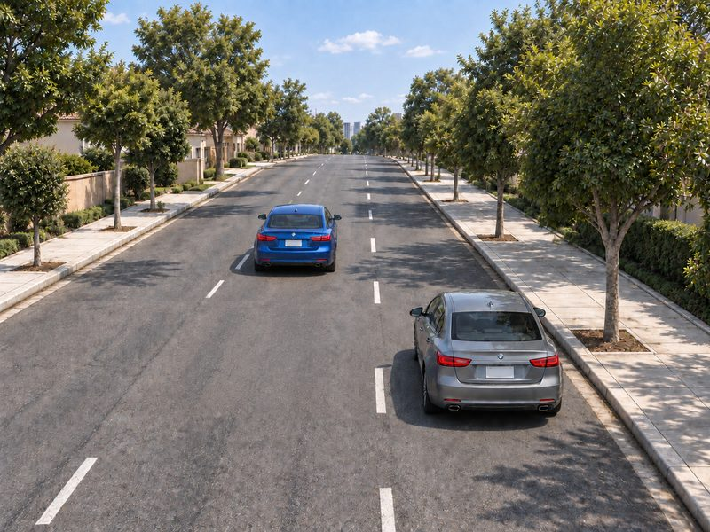
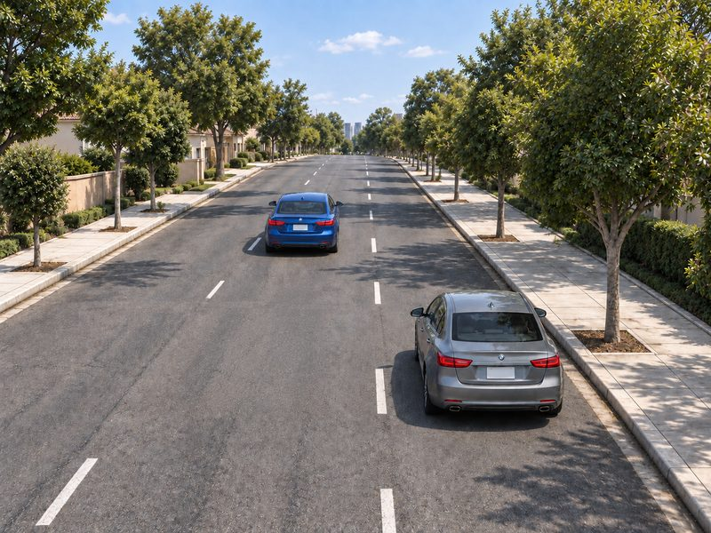
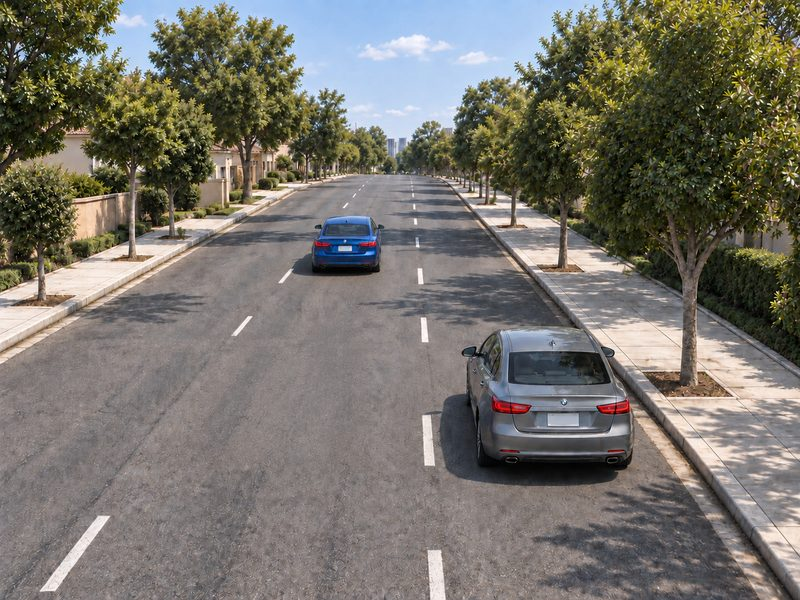
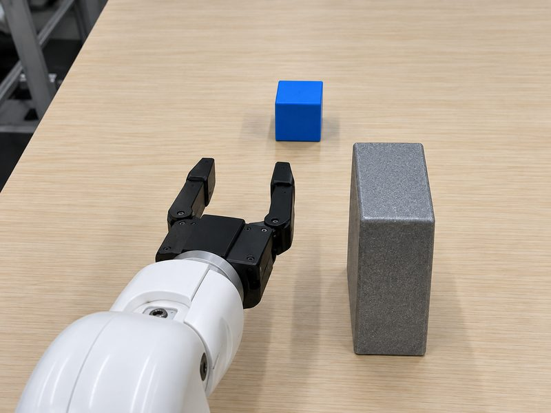
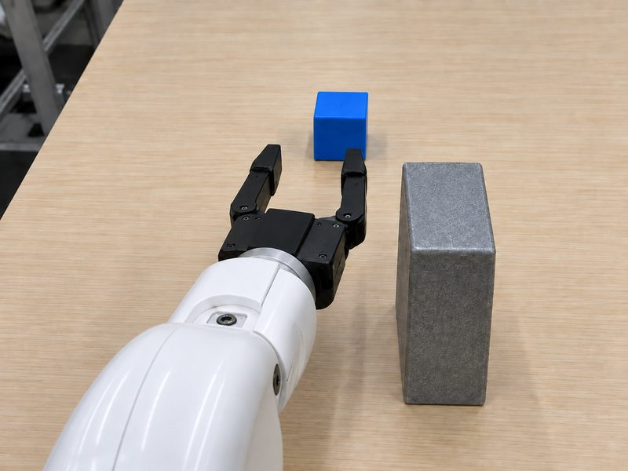
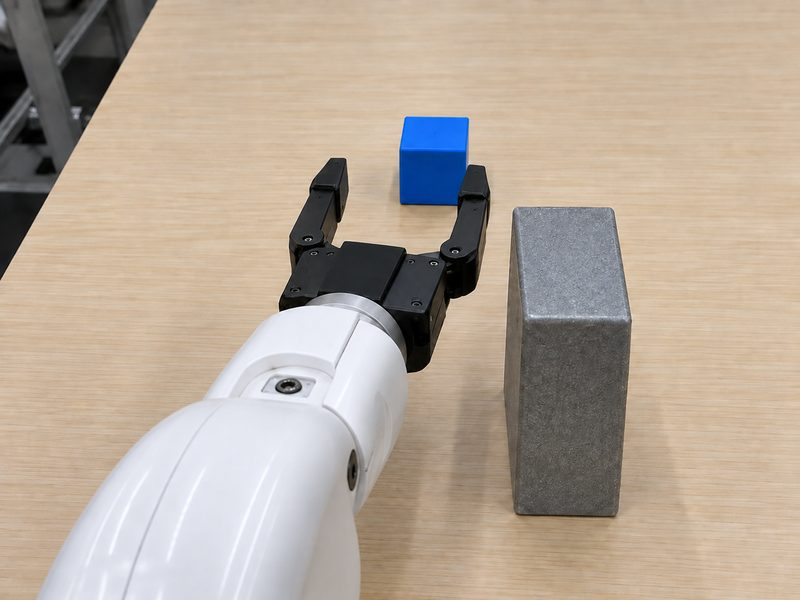
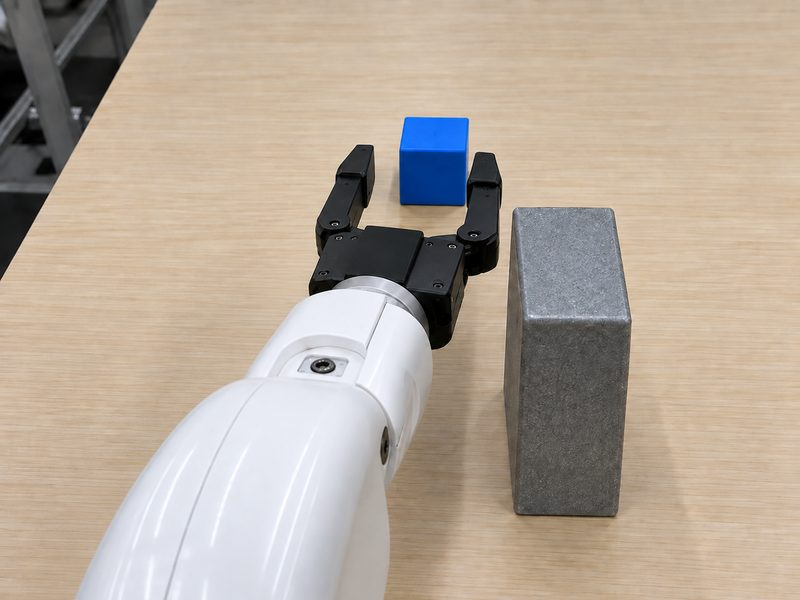
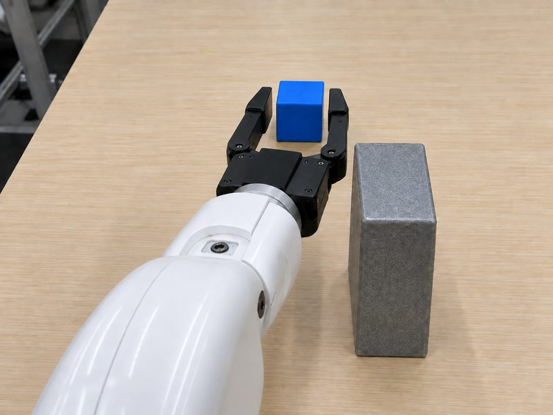
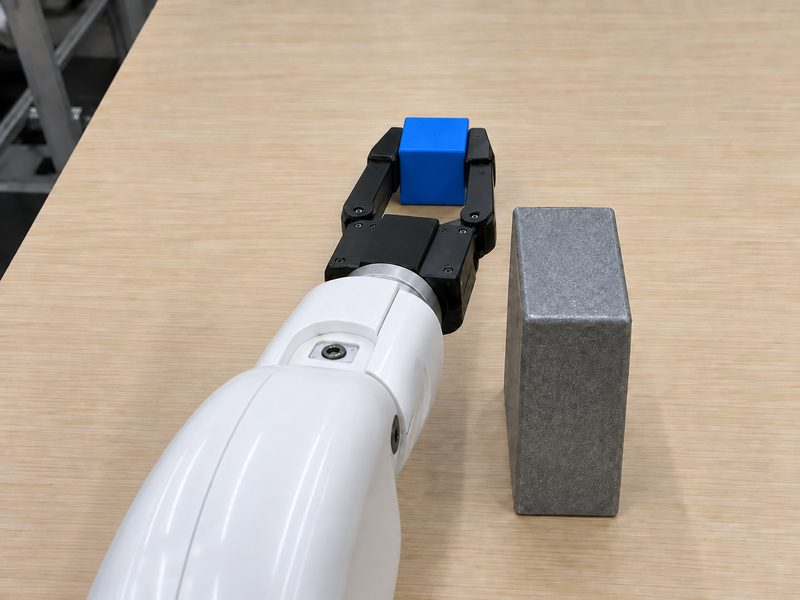
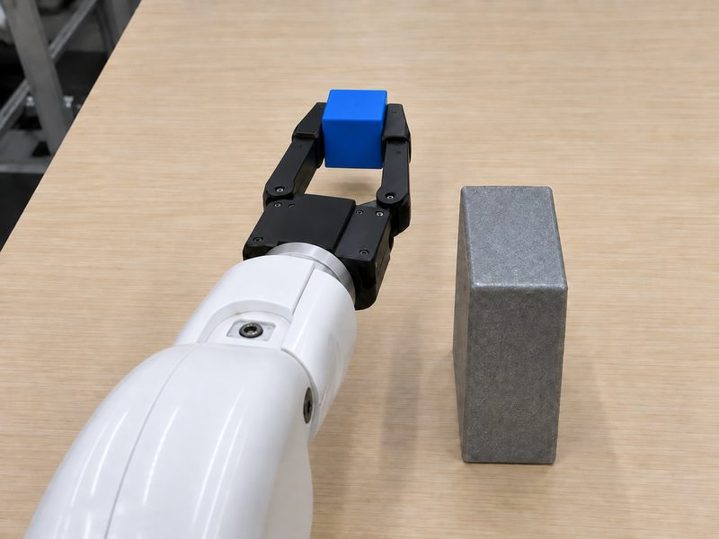
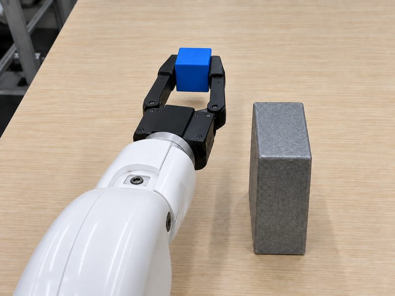
t₁The recorded pair agrees — at the clean target
A recorded action-video pair specifies how the two modalities agree at σ = 0. It does not specify how they should deviate together from that target as noise is added.
Perturbed action, Perturbed video
The noised action implies a different ego path and a different visual future — but the corrupted video remains seated on the clean trajectory. In the low-noise regime the scene layout and even the dynamics stay clearly visible.
Safe video, unsafe action
Useful visual structure can emerge early in denoising: in DIDO's four-step ablation, first-step video features already achieve 97.7 % success on LIBERO. Without alignment, an intermediate action estimate can veer toward an obstacle while the imagined video still depicts a safe pass.
Video commits to a layout early; the action keeps changing
In both driving and manipulation the visual future is recognizable while σ is still high, whereas the explicitly predicted trajectory is still changing. Under a shared schedule the video can therefore commit to a layout before the action estimate settles.
Standard training noises video and action with one shared level (red diagonal): both are assumed equally uncertain at every step.
The traces above show the opposite: the action implied by the partially denoised video (blue) converges within the first few steps, while the video itself is still far from clean.
The gap between the curves is the mismatch: the video has effectively committed to an ego path while the action estimate is still changing, and nothing in the training pair requires the two to agree along the way.
Method
Three components, one training recipe
Explore how CtrlWAM constructs physically corresponding inputs, paces video against actions, and represents surrounding agents.
Pair every perturbed action with its rendered consequence
Left: standard noising keeps the recorded future in the video. Right: the simulator executes the noised command, its render is noised, and both branches are still trained toward the recorded pair.
- Sample the level. Draw t\in[0,1), set \sigma_a = 1-t, and form the perturbed command \mathbf{a}^{\mathrm{cmd}}_t = t\,\mathbf{a}^\star + (1-t)\,\boldsymbol{\epsilon}_a.
- Execute and render. A simulator runs the command — AlpaSim on NuRec 3DGS scenes for driving, RoboTwin 2.0 for manipulation. We store the executed trajectory \mathbf{a}_t and the render latents \mathbf{r}.
- Noise the render. \mathbf{v}_{\sigma_v} = \sigma_v\,\boldsymbol{\epsilon}_v + (1-\sigma_v)\,\mathbf{r}. The input now pairs a perturbed action with a corrupted view of its consequences: physical correspondence.
- Supervise toward the recording. Targets are the recorded actions and video at the same timestamps, so the model learns to correct both the behavioral and the visual discrepancy.
Keep the video at a higher noise level while the actions settle
- \varsigma=1 recovers the shared schedule \sigma_v=\sigma_a.
- For \varsigma>1, at a fixed action noise level the video input carries more Gaussian noise and less rendered content; the two levels stay deterministically coupled.
- Each predicted modality gets its own timestep embedding; actions supplied as conditioning stay fixed.
- Intended effect: leave room for changes in scene layout while the action is uncertain, then let the video settle into detail refinement as the action converges.
Predict or command every agent in the scene
- One ego block plus K agent blocks, each with history and future tokens (14 + 64 rows at 0.1 s).
- Without commands, the model jointly predicts the ego trajectory, the agent trajectories and the video; the predicted agent futures serve as intent estimates that inform the ego action.
- With commands, the agent's future tokens are supplied clean and the model predicts the video and any remaining agents.
- K=0 recovers the ego-only model exactly.
Agent histories store ego-frame positions at t_0 (scaled by 20 m); futures are unicycle controls in each actor's local frame. Actors are selected by visibility in the front camera (≤ 60 m, ≥ 12 px, not occluded), up to K_{\max}=8; a shared agent projection and per-actor spatial rotary positions place them on the latent grid.
Model
One diffusion transformer, three token streams
A shared transformer processes video, ego-action and optional agent-action tokens, conditioned on observed history. Future tokens are denoised as prediction targets or supplied clean as conditions — the same network serves joint prediction, action-conditioned video and video-conditioned actions.
Tokens flow through the model: noised future tokens from each modality enter the transformer, attend jointly with the clean history condition, and are decoded back into video, ego action and agent trajectories.
Future frames → causal VAE (4× time, 16× space) → latent tokens. Noised in forward dynamics and joint mode, clean for inverse dynamics.
Unicycle controls (acceleration, curvature) or 14-D joint positions; 64 future rows. Noised for prediction, clean when supplied as a command.
0…K agent blocks through a shared agent encoder/decoder; variable length. Backbone: Cosmos 3-Nano (16B), language pathway frozen.
Results · driving
Better command following, consistency and forecasting
1,156 held-out clips from PhysicalAI-AV. In Joint mode the model predicts video and actions together; in forward dynamics the future actions are supplied as commands. CtrlWAM-S is the ego-only model, CtrlWAM-M the multi-agent model, trained with the same recipe, data and budget.
| Joint mode | Forward dynamics | |||||
|---|---|---|---|---|---|---|
| Model | PSNR (dB) | Self ADE (m) | Rollout ADE (m) | PSNR (dB) | Cmd ADE (m) | Cmd FDE (m) |
| Cosmos 3-Nano (zero-shot) | 19.58 | 6.212 | 8.267 | 20.05 | 1.600 | 4.040 |
| SFT baseline | 20.38 | 0.538 | 2.920 | 21.23 | 1.023 | 2.803 |
| CtrlWAM-S (ego-only) | 20.34 | 0.521 | 2.848 | 21.23 | 1.001 | 2.722 |
| CtrlWAM-M (multi-agent) | 20.42 | 0.513 | 2.804 | 21.28 | 0.981 | 2.671 |
Self ADE compares the IDM read-out of predicted video with the model's own action trajectory (video–action consistency). Rollout ADE compares the generated actions with the recording. Cmd ADE/FDE compare the IDM read-out with the supplied command. Bold = best, underline = second best.
Results · counterfactual ego control
Modified ego commands with the scene held fixed
Scene history, text prompt and sampling noise are held fixed; only the ego command changes. Stopping reduces forward viewpoint progression; acceleration advances the ego's position relative to road boundaries and parked vehicles.
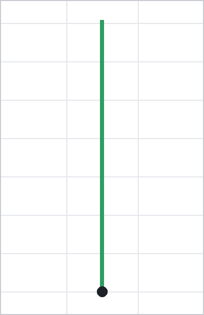
Top-down inset: the commanded ego path in the t₀ frame (10 m rings), magenta when rewritten. Generated by the multi-agent CtrlWAM model in forward dynamics; one clip at 10.7 m/s, 5 Hz frames over 6.4 s.
Warped schedules follow modified commands more closely
- 100 held-out clips; each level averages four rewritten commands: brake to stop, accelerate, nudge left, nudge right.
- Severity = how far the command deviates from the recording: 4 / 7 / 11 m (low / mid / high). Low / mid / high use decelerations of 1 / 2 / 3 m/s², accelerations of 0.75 / 1.5 / 3 m/s² and lateral offsets of 2 / 3.5 / 5 m.
- Warped schedules (ς = 2, 3, 5) follow commands more closely than the shared schedule at every level, and the gap widens as perturbations grow.
- Training on recorded frames in place of renders (GT-Src) degrades fastest, indicating that the rendered consequences of perturbed commands drive command following.
Results · multi-agent control
A dedicated channel for commanding surrounding vehicles
Scene history, the ego command and sampling noise are held fixed while a selected agent's future trajectory is rewritten. Gemini 3.8 Flash rates agreement between the generated video and the supplied agent command (0–1, reported in %). Only CtrlWAM-M can receive the command; the other models are scored on agreement without conditioning.
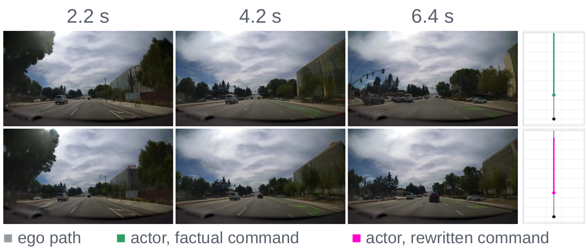
Counterfactual control of the lead vehicle. Top: factual agent trajectory. Bottom: the same scene with the agent commanded to stop — the generated video shows it halting ahead of the ego vehicle. Right: unchanged ego path (gray), factual (green) and rewritten (magenta) agent command. Mean compliance rises from 10.07 % (ego-only) to 18.94 %.
Results · robotic manipulation
Highest score in all six WorldArena categories
RoboTwin 2.0 bimanual manipulation, 1,000 held-out episodes, WorldArena Track-1. Each variant starts from a common 2,000-iteration checkpoint and receives 2,000 additional iterations using aligned renders (CtrlWAM), real frames in place of renders (GT-Src) or standard SFT. EWMScore is 100 × the mean of the 15 individual metrics.
| Category | Cosmos 3 zero-shot | Cosmos 3 SFT | GT-Src | CtrlWAM | Oracle |
|---|---|---|---|---|---|
| Visual quality | 0.447 | 0.560 | 0.563 | 0.576 | 0.598 |
| Motion quality | 0.247 | 0.316 | 0.306 | 0.327 | 0.348 |
| Content consistency | 0.413 | 0.650 | 0.620 | 0.665 | 0.662 |
| Physics adherence | 0.258 | 0.456 | 0.480 | 0.540 | 0.782 |
| 3D accuracy | 0.812 | 0.884 | 0.899 | 0.921 | 0.956 |
| Controllability | 0.635 | 0.774 | 0.788 | 0.819 | 0.869 |
| EWMScore | 44.88 | 58.70 | 58.65 | 61.75 | 66.92 |
Bold = best, underline = second best; Oracle scores the recorded videos and is excluded from ranking. Individual metrics do not uniformly favor aligned training (continued SFT has slightly higher image and aesthetic quality); the aggregate gain comes from JEPA similarity, trajectory accuracy, interaction quality and instruction following.
Conclusion
Physically aligned denoising for controllable world action models
CtrlWAM makes the relationship between an action deviation and the observation it produces part of the denoising supervision. Warped schedules keep visual layout responsive while actions evolve, and multi-agent streams allow surrounding futures to be predicted or supplied as commands.
Limitations. The model inherits the bidirectional architecture of Cosmos 3, so generation latency remains a bottleneck; we plan to distill it into a fast autoregressive model and report closed-loop performance in future work. Aligned noising requires a simulator that can execute perturbed actions, and the multi-agent extension is demonstrated for driving only.
Citation
@misc{peng2026ctrlwamcontrollableworldaction,
title={CtrlWAM: Controllable World Action Models with Aligned Intent and Foresight},
author={Chensheng Peng and Wenhao Ding and Ran Tian and Zewei Zhou and Jef Packer and Maximilian Igl and Peter Karkus and Yan Wang and Masayoshi Tomizuka and Boris Ivanovic and Marco Pavone and Yuxiao Chen},
year={2026},
eprint={2610.00859},
archivePrefix={arXiv},
primaryClass={cs.CV},
url={https://arxiv.org/abs/2610.00859},
}